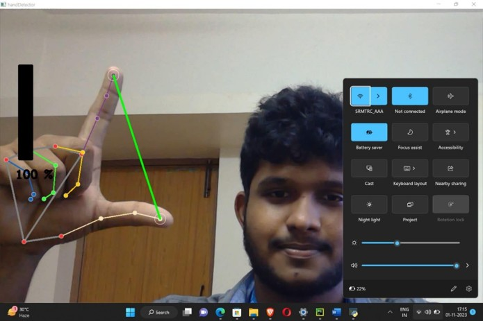
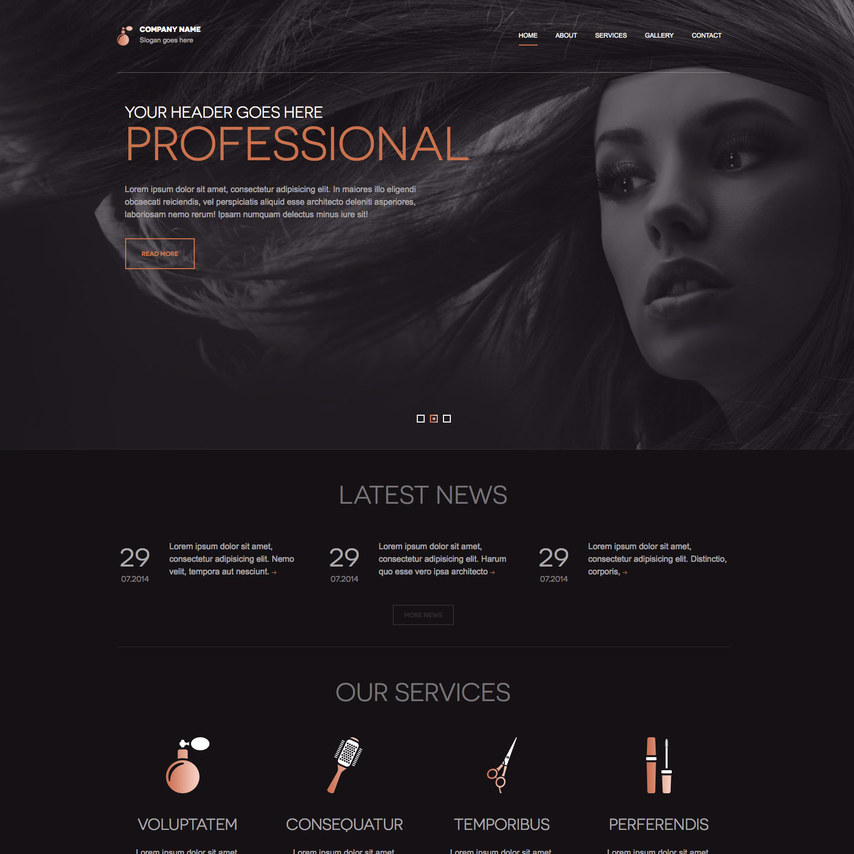
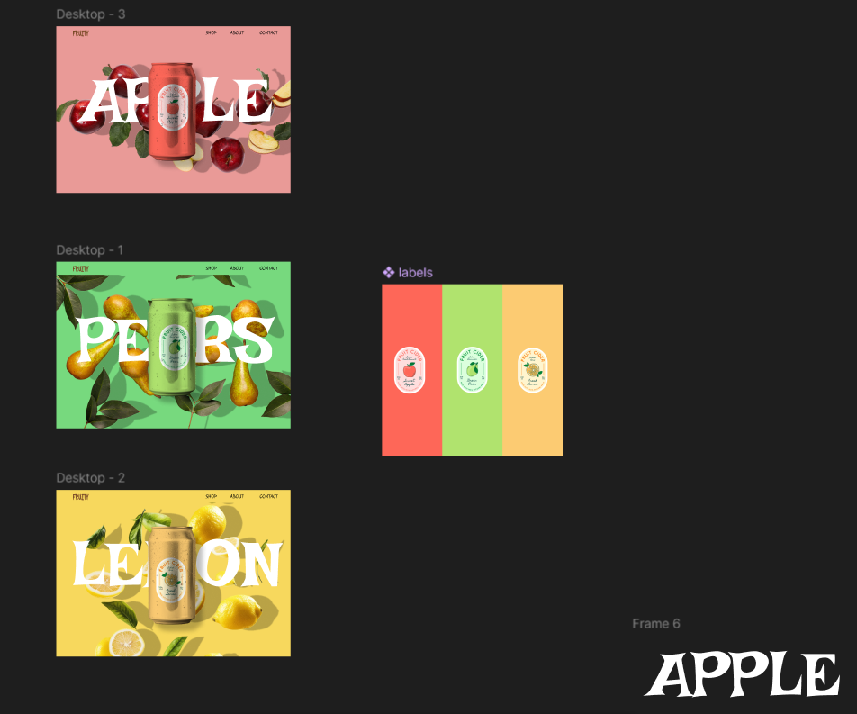
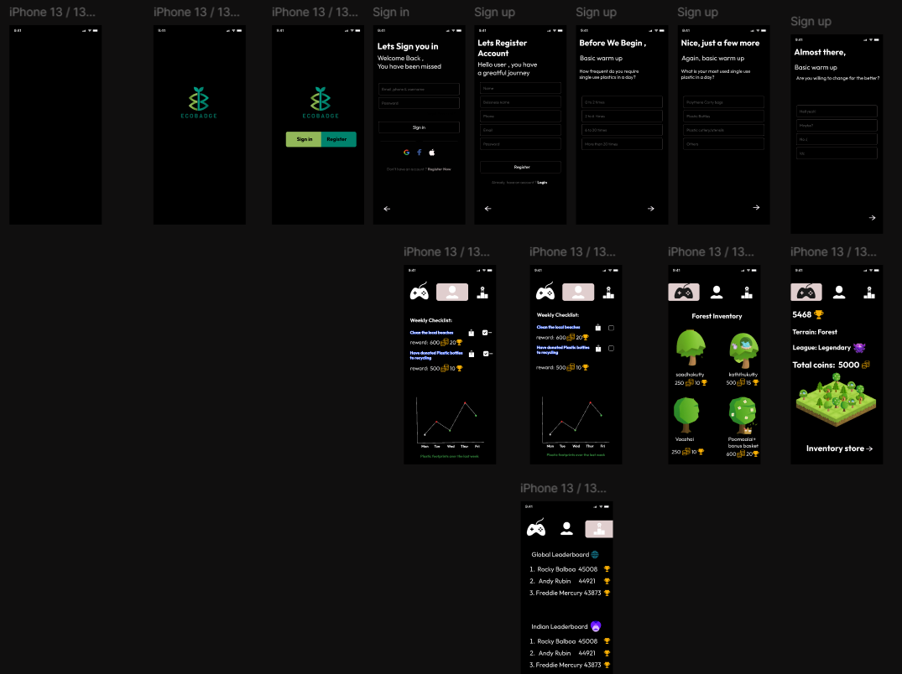
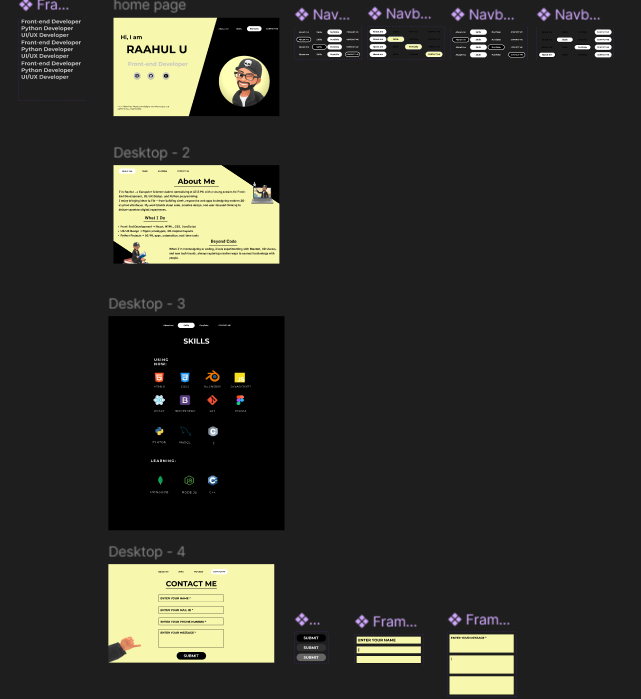
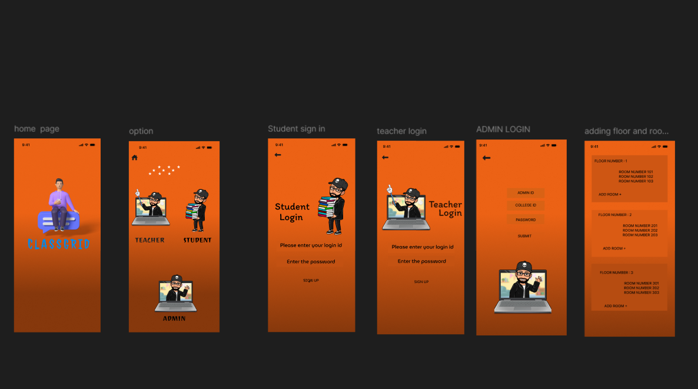

I design & build intuitive digital experiences blending creativity with technology.
View My Work
Developed a real-time computer volume control system using hand gestures captured via webcam. Utilized MediaPipe to detect thumb and index finger positions and mapped their distance to system audio levels using Pycaw. Displayed volume bar overlay using OpenCV for visual feedback.
Tech Stack: Python, OpenCV, MediaPipe, NumPy, Pycaw

Designed and developed a full-stack beauty salon booking application using React for the frontend and Flask for the backend. Implemented user authentication, appointment scheduling, and an admin dashboard for managing bookings and services.
Tech Stack: React, Flask, SQLAlchemy, JWT, Bootstrap




Overview -- Fruity is a conceptual juice brand designed to be fresh, bold, and playful. The goal was to create packaging and digital visuals that stand out in a competitive market while keeping a consistent brand identity.
ProcessResearch: Analyzed competitors, market trends, and target demographics to identify opportunities for differentiation.
Wireframing: Focused on simple layouts with the can at the center, bold typography, and minimal navigation.
Design: Used vibrant color palettes (red, green, yellow) to differentiate flavors, playful organic typography for impact, and clean labels for clarity.
Variants: Created three distinct flavor variants (Strawberry, Kiwi, Mango), each with unique color schemes and fruit illustrations to convey freshness and appeal.
Outcome --- A cohesive design system with eye-catching mockups, consistent labels, and a modern brand identity that feels youthful, refreshing, and memorable.
Overview: ECOBADGE is a gamified app that tracks and reduces plastic use by turning eco-actions into fun, rewardable challenges. The UI blends sustainability with gaming mechanics to motivate consistent behavior change.
Process: Simple onboarding and auth flows personalize the experience; a dashboard shows weekly checklists and progress charts; gamification awards coins for completed tasks; a Forest Inventory visualizes saved plastic as growing trees; leaderboards foster friendly competition.
Outcome: A dark-themed, engaging interface with bright accents that makes sustainability feel social, playful, and rewarding—encouraging users to reduce plastic waste through game-like incentives.
Overview: A clean and modern portfolio website showcasing my journey as a Frontend Developer & UI/UX Designer. The design focuses on clarity, minimalism, and easy navigation to highlight skills, projects, and contact details.
Process:
- Home Page: Simple intro with personal branding and quick links.
- About Me: A detailed section about my background, skills, and approach.
- Skills: Visual grid layout with icons for technologies and tools.
- Contact: Minimal form with clear input fields and CTA button for quick communication.
Outcome: A responsive, user-friendly portfolio with a professional look that communicates both technical expertise and design creativity. It’s structured for recruiters, clients, and collaborators to easily explore my profile.
🏫 ClassGrid – Classroom Allocation App (In Progress)
Overview: ClassGrid is a mobile app designed to simplify classroom management by allowing students, teachers, and admins to access and allocate rooms with ease.
Process:
- Home & Options: Simple splash and role-based selection (Student, Teacher, Admin).
- Login Flows: Separate login for each role with ID & password inputs.
- Admin Tools: Ability to add floors and assign room numbers dynamically.
Outcome: A straightforward, functional interface with clear navigation. ClassGrid is still in progress, but aims to deliver an efficient digital system for managing classrooms and reducing manual scheduling work.
I’m a passionate UI/UX Designer and Frontend Developer. I create intuitive and visually appealing digital experiences by combining design principles with modern web technologies. My goal is to solve user problems while delivering innovative solutions.